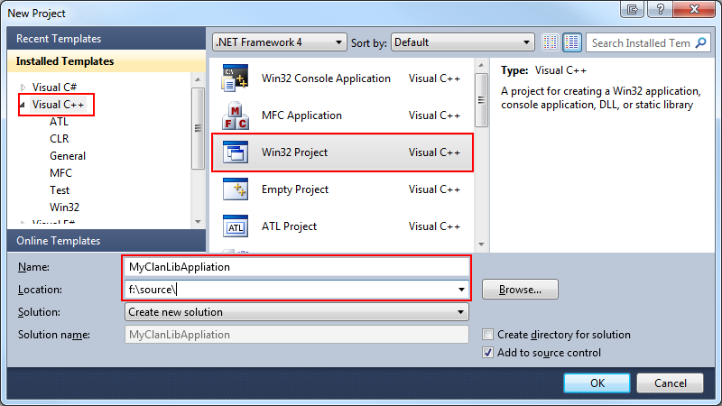
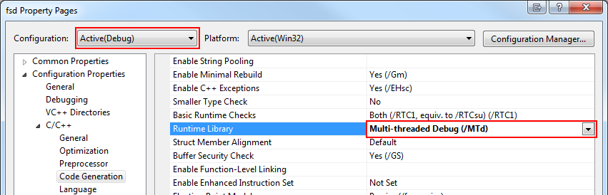
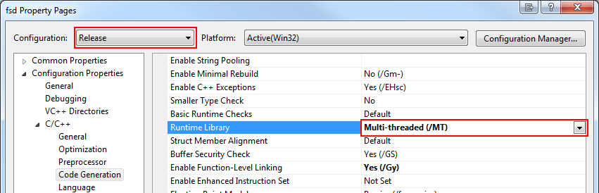

Visual C++ on Windows
Getting Started
First step is to make sure your Visual Studio system is up to date. As of this writing, we support the following versions:
- Visual Studio 2012
- Visual Studio 2010
- Visual Studio 2010 Express - download it for free
You also need to install the Windows 8 SDK. Note that this already comes with Visual Studio 2012.
Compiling ClanLib
If you need the very latest ClanLib directly from our source control repository, read the compilation guide.
Otherwise and much easier, you can just use the precompiled versions we provide, these are always up-to-date on the latest release. Read on for a guide on using the precompiled libraries.
Precompiled Libraries
The precompiled versions can be found here: Visual Studio Binaries.
After you downloaded the binaries, exctract these files into a directory. Remember which one, because you need to enter that information in the next section. It will create a structure looking like this:
- <yourpath>\include\ClanLib\...
- <yourpath>\include\zlib.h
- <yourpath>\include\zconf.h
- <yourpath>\include\...
- <yourpath>\lib\win32\clanApp-static-mt.lib
- <yourpath>\lib\win32\clanApp-static-mt.pdb
- <yourpath>\lib\win32\clanApp-static-mt-debug.lib
- <yourpath>\lib\win32\clanApp-static-mt-debug.pdb
- <yourpath>\lib\win32\zlib-static-mt.lib
- <yourpath>\lib\win32\zlib-static-mt.pdb
- <yourpath>\lib\win32\...
- <yourpath>\lib\x64\zlib-x64-static-mt.lib
- <yourpath>\lib\x64\zlib-x64-static-mt.pdb
- <yourpath>\lib\x64\...
Configure Visual Studio
You will need to configure Visual Studio to look for the downloaded libraries.
Creating a Solution For Your Application
Follow these steps to create a Visual Studio solution for a ClanLib application:
-
Select File->New Project.
-
Find Visual C++ group in the Project Types, and select Win32 Project, and specify the location, and click OK.

-
Under Application Settings, select Empty project, and press Finish.

-
Add a new C++ file to your project. This can be done by right clicking your project in Solution Explorer, and selecting Add->New Item->C++ File.
If you do not do this first, you will not see the C++ / Code Generation settings required for step 7.
-
Right click your Project (not the solution) and select Properties.
-
Select the Configuration Properties section.
-
Select the C/C++ tab, and then category Code Generation.
-
Change the Use run-time library to Debug Multithreaded.

-
Change the configuration dropdown at the top of the dialog to Release.
-
Change the Use run-time library to Multithreaded.

That should be it. If you've done everything correct, you can start coding your ClanLib application!
Examples
You could also check out the examples that comes with the distribution; they are a great resource to learn from. Since the precompiled packages does not include the examples, you will need to download the ClanLib source package. Download the ClanLib source package, extract it anywhere, and open the Examples.sln Visual Studio solution file.
Troubleshooting
The most common problems encountered with building ClanLib applications:
-
You get a lot of linker errors complaining about multiple definitions of functions like _exit or "cannot open file '*-static-mtdll-debug.lib' "This is almost always caused by mixing runtime versions. Your project is most likely set to Multithreaded Debug DLL, while ClanLib expects it to be Multithreaded Debug. Fixed by going to the project settings of your project and set it to what ClanLib expects.
-
You get a lot of linker errors complaining about xran and similar.This is probably caused by using libraries compiled with Visual Studio 2008 in a Visual Studio 2010 environment. Download the correct precompiled versions.
-
LINK : fatal error LNK1104: cannot open file 'zlib-static-mt-debug.lib'Visual Studio cannot locate the ClanLib dependency libraries. Make sure you have setup the include and libs directories correctly as explained in the guide. If you only have files like zlib-x64-static-mt-debug.lib, make sure you compile your application in 64 bit and not 32 bit.